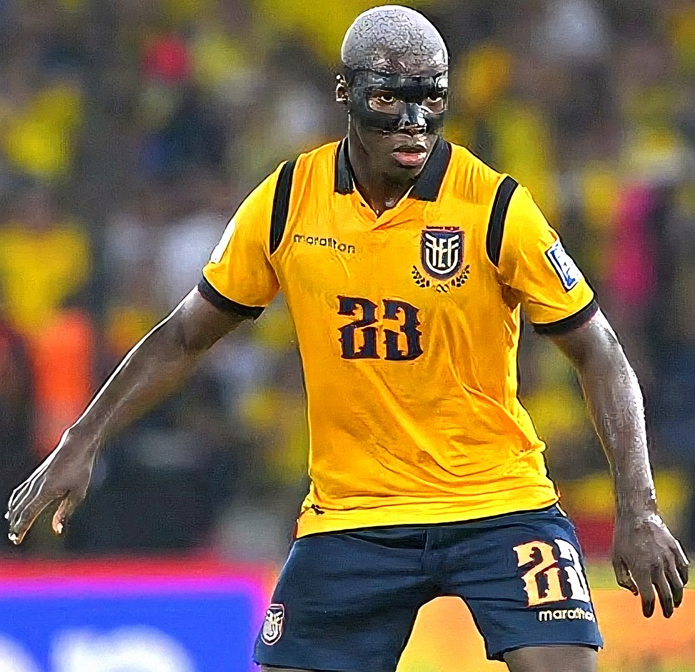
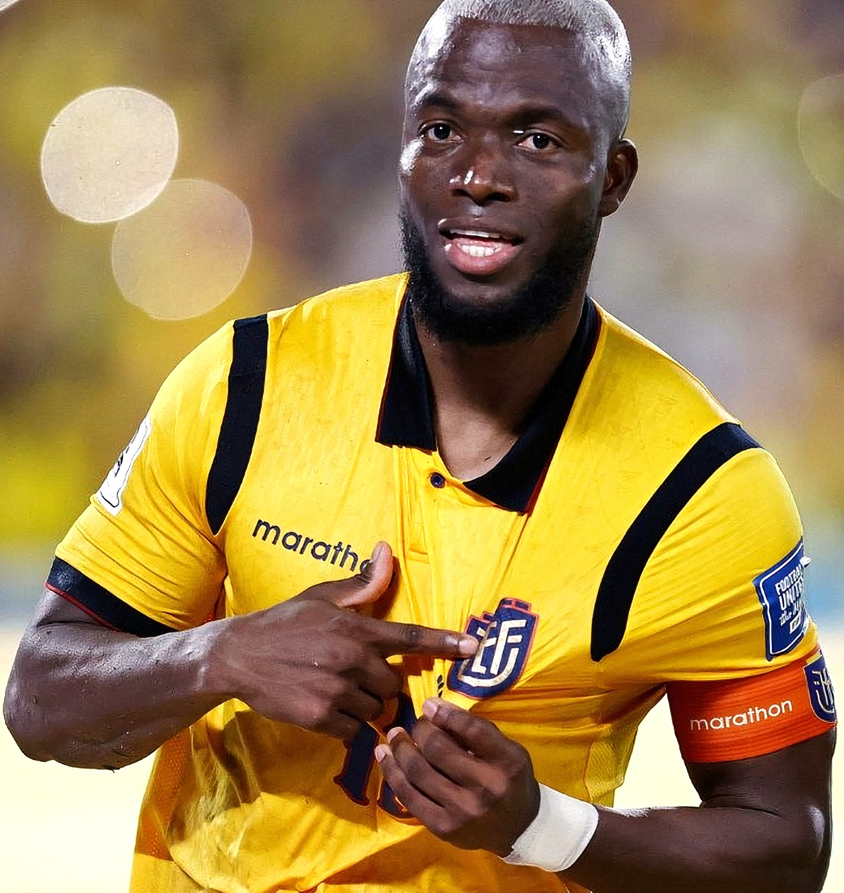

Nuestros Cracks en la Cita Mundialista
La columna vertebral de Ecuador combina la experiencia europea con el desparpajo de jóvenes talentos consolidados a nivel global.

Moisés Caicedo
El motor indiscutible del mediocampo. Con su gran despliegue, visión de juego y experiencia en la élite europea, será el encargado de equilibrar y distribuir el juego de La Tri frente a los rivales del grupo.

Enner Valencia
Nuestro legendario goleador y capitán. Con su olfato de gol y experiencia en grandes torneos, Enner liderará el ataque de La Tri una vez más, buscando aumentar su registro de goles históricos en la Copa del Mundo.

Piero Hincapié y Willian Pacho
El candado defensivo. Una de las duplas de zagueros centrales más jóvenes, sólidas y cotizadas en el fútbol de élite actual, garantizando seguridad y una salida limpia desde el fondo.
Cántico de la Hinchada (Audio)
Escucha el ambiente y los gritos de apoyo que bajan desde las gradas cada vez que juega Ecuador:
Audio ambiente - ¡Sí se puede!